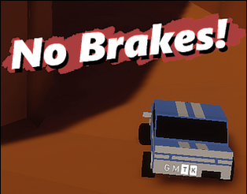
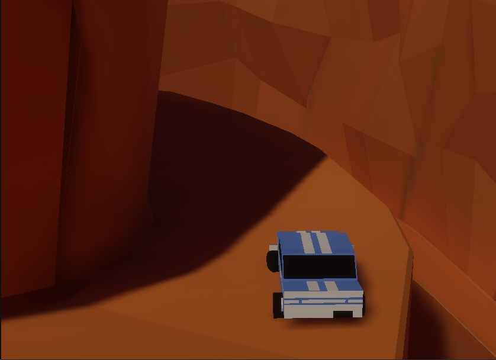
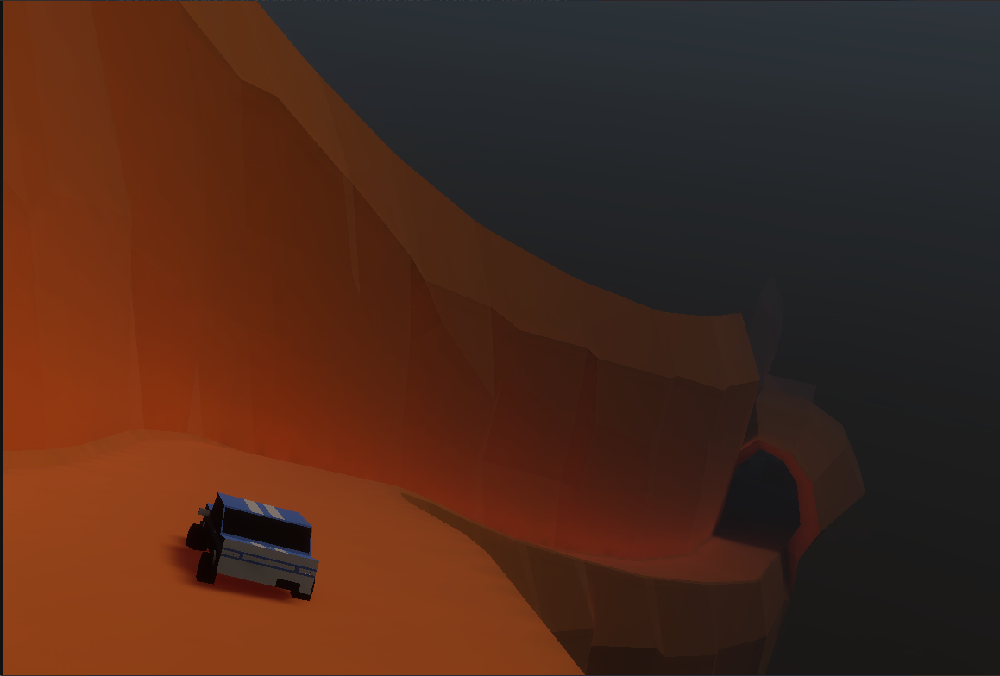

You have no brakes, can you make it to the end of the course?
Press R to reset the vehicle, it will be necessary, sorry. Made in 7ish hours after scrapping an even worse idea. Well after waking up I had an hour and tweaked the camera and controls. I hope they feel better now.

